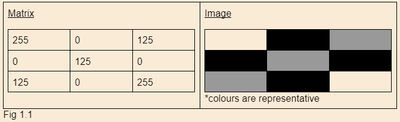
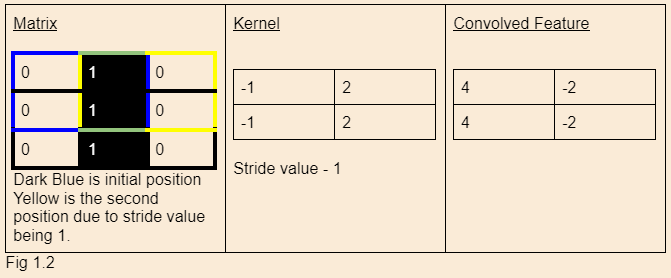
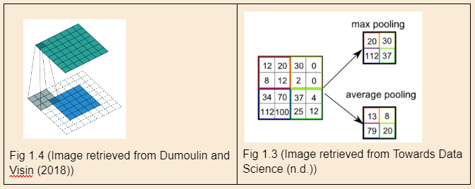
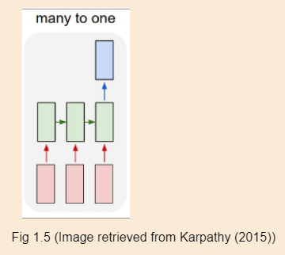

One of the biggest struggles of vertical farming or farming, in general, is that with years of experience, a farmer can optimize their land to produce the most crops, but they need time to get this expertise. In vertical farming, if we were to start today, we would require years to optimize all the conditions of vertical farming, such as pot size, type of soil, type of fertilizer and many more. We could eliminate this requirement for the time by using deep learning. A machine that can utilize deep learning can help us accomplish an optimized production method in the shortest amount of time. Convolutional (CNN) and Recurrent neural networks are some of the architectures covered in class that would be optimal in providing the most accurate output. Firstly, convolutional neural networks, often used in image detection, would be highly effective in vertical farming. One of the most prominent issues of vertical farming is that large amounts of crops would be in very close proximity, which would make it an excellent environment for disease or pests to spread. A farmer will detect disease much later than a machine would, which is where we can implement machine learning to detect disease spread. Convolution neural networks would use the image of the crops as the input, which is where the network would start. These images are made of data usually in RGB format where each pixel has a certain value that can be represented in numerical values; for example, the colour white has the values 255, 255, 255 for red, green and blue, respectively. For simplicity of understanding the neural networks, we can use grayscale, which would have values for only the amount of white that is within that pixel varying from 0 to 255. Let's think of these values on a picture 3 pixels wide and 3 pixels high we would get a matrix of the values that form the image. Fig 1.1D
The convolution layer would involve a kernel/filter with a specific size, usually smaller than the picture matrix size, that would traverse the image with a given stride value. Stride value refers to how many pixels it moves over after computing the dot product of overlapping pixels of the selected area. It aids the network in getting relevant information like edges and corners.
The kernel can be optimized to detect important information; for example, in Figure 1.2, we use a kernel that is ideal for detecting vertical lines. We notice that the convolved feature has a big difference between the first and second columns, which might indicate a vertical line. This can be applied to the data with more depth, such as RGB instead of grayscale, but what would happen in that case is that the total of the dot product of all the layers would be in the convolved feature. The initial layers of the network would allow us to access low-level information such as edges, corners, and colours. The more layers added to the network, the higher the specificity of the qualities would become; with more layers, we can distinguish the leaf of a plant from another. Pooling is another layer that would aid us in this process. Pooling is similar to the convolutional layer in a sense that we look at a smaller matrix within the main matrix. It often uses max or average pooling. Max pooling uses the highest value in the matrix we are looking at, and average pooling calculates the average of the given matrix. Fig 1.3 Furthermore, to avoid losing information on the edges, we add padding on the edges, letting us stride through the entire matrix with the edges also accounted for. This is done by adding 0s around the main image matrix to allow the kernel to traverse freely. Fig 1.4. Layers of the network can be infinite.
Using these strategies, convolution neural networks are formed. Vertical farming can benefit these by implementing it in image detection on their plants. An image could be gathered at a set time interval and assessed by the deep learning algorithm to detect potential diseases and pests to lower the chance of it spreading to the rest of the crop. This would minimize the chances of the crop not yielding any product and maximize the product since it assures the plants to be healthy. Secondly, we can also implement recurrent neural networks (RNNs) into vertical farming in combination with convolutional neural networks. RNNs can use sequences to produce predicted outcomes, which is specifically useful in vertical farming to find the optimal conditions for quantifiable qualities such as humidity, light exposure, amount of fertilizer, and the amount of water. In the case of vertical farming, a many-to-one structure would be the most optimal. In many to one structure, we have a series of inputs and an output. In Figure 15, we notice that each rectangle is connected to another, where we have a series of inputs represented by the red rectangles and layers represented in green. Each input in the given sequence is then passed on, processed by the RNN and updated while holding onto crucial data about the previous input. Finally, a result represented in the blue rectangle is produced, which would tell us if we have the optimal conditions. In order to train a dataset that would work with our vertical farming
adventure, we would use data from the plants over a certain period of time; this would allow our model to be trained to predict if the plant is in its optimal condition to grow as fast and as healthy as possible. This collected data can be a combination of the conditions or different conditions. Each condition can have a model trained on it; for example, we can use light exposure. We would collect data on the plants about their exposure to light in terms of minutes per day, then use that list of data and push it through our RNN to determine if the plant is in its optimal condition to produce results. Thus, deep learning can be implemented to improve and maintain vertical farming stations' healthy and optimal conditions to promote faster and more beneficial yield.
In conclusion, the rapid growth of the earth's population requires an immediate change in the methods implemented in food production. We can use vertical farming, which saves land, uses fewer resources and produces more to adapt to our future needs. In vertical farming, artificial intelligence would play a key role in optimizing the farms to produce the most yield in the shortest amount of time. Pairing techniques like Constraint Programming to optimize resource allocation to minimize cost and maximize output and Deep Learning to implement disease control through image recognition and calculate the optimal conditions. In the future, we will have to make changes if we want to adapt to the new circumstance of the world; with climate change, overpopulation, and pollution, vertical farming optimized with artificial intelligence might be one of the technologies that will save us from our doom.
References